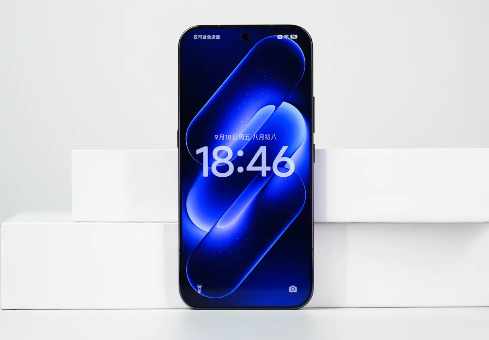

تقنية9 دقائق
مواجهة الرائدات 2026: Xiaomi 18 Pro Max ضد vivo X500 Pro Max ضد Find X10 Pro Max ضد Magic9 Pro Max ضد Mate 90 Pro Max
خمسة هواتف رائدة صينية أُطلقت بين سبتمبر وأكتوبر 2026، وتتنافس على لقب أفضل "Pro Max" لهذا العام. جمعنا هنا المواصفات الرسمية ونتائج الاختبارات الصينية المنشورة في مقالاتنا عن كل هاتف، ثم حوّلنا الأسعار إلى الدولار والريال.

جدول المقارنة الكامل
| المواصفة | Xiaomi 18 Pro Max | vivo X500 Pro Max | OPPO Find X10 Pro Max | HONOR Magic9 Pro Max | HUAWEI Mate 90 Pro Max |
|---|---|---|---|---|---|
| المعالج | Snapdragon 8 Elite Extreme Gen 6 | Dimensity 9600 Pro | Dimensity 9600 Pro | Snapdragon 8 Elite Extreme Gen 6 | Kirin 9050 Pro (نسخة 16GB) / Kirin 9050 (نسخة 12GB) |
| الشاشة | 6.9 بوصة، 1–120Hz | 6.85 بوصة، 3168×1440، 1–144Hz | 6.78 بوصة، 2772×1272، 144Hz | 6.8 بوصة، 2868×1320، 120Hz | 6.9 بوصة مزدوجة الطبقات، 1–120Hz |
| البطارية | 8,500mAh | 8,000mAh (نموذجية) | 8,000mAh | 8,800mAh | 6,800mAh |
| الشحن السلكي / اللاسلكي | 100W / 50W | 90W / 40W | 80W / 50W | 100W / 80W | 100W / 50W |
| الكاميرا الرئيسية | 200MP، 1/1.28 بوصة | 50MP، Sony LYT-L910، 1/1.28 بوصة | 200MP، 1/1.3 بوصة | 200MP، 1/1.28 بوصة مع جيمبال | 50MP بفتحة متغيرة F1.4–F4.0 |
| المقرّبة | 200MP، 75 مم (3.2x) | 200MP، 85 مم، 1/1.4 بوصة | 200MP، 70 مم (3x)، 1/1.56 بوصة | 200MP، 3.5x، 1/1.4 بوصة | 200MP، 4x |
| الوزن | 235 أو 240 غرامًا | 225 أو 229 غرامًا | 235 غرامًا | 233 غرامًا | نحو 234 غرامًا |
| AnTuTu V12 (اختبار إعلامي) | 4,443,544 (AnTuTu) | 4,460,761 (AnTuTu) | غير متوفر | 4,832,382 (mobilecity.vn) | غير متوفر |
| بطارية AnTuTu: 6 ساعات مختلطة | بقي 52% | بقي 50% | بقي 69% | غير متوفر | غير متوفر |
| Star Rail (AnTuTu، 30 دقيقة) | 59.36 إطارًا، 44.2 درجة أمامية | 59.63 إطارًا، 46.9 درجة أمامية | غير متوفر | غير متوفر | غير متوفر |
| تحمّل Geekerwan | غير متوفر | غير متوفر | غير متوفر | غير متوفر | 9 ساعات و56 دقيقة (نموذج 5.0) |
| السعر الابتدائي في الصين | ¥6,999 (12+256) | ¥6,999 (12+256) | ¥6,799 (12+256) | ¥6,499 (12+256) | ¥9,499 (12+512) |
الأسعار الرسمية بالدولار والريال
| الهاتف والنسخة | السعر الرسمي في الصين | بالدولار | بالريال السعودي |
|---|---|---|---|
| Xiaomi 18 Pro Max 12+256 | ¥6,999 | 1,046$ | 3,924 ريال |
| Xiaomi 18 Pro Max 16GB+1TB | ¥9,999 | 1,495$ | 5,605 ريال |
| vivo X500 Pro Max 12+256 | ¥6,999 | 1,046$ | 3,924 ريال |
| OPPO Find X10 Pro Max 12+256 | ¥6,799 | 1,016$ | 3,811 ريال |
| HONOR Magic9 Pro Max 12+256 | ¥6,499 | 972$ | 3,643 ريال |
| HUAWEI Mate 90 Pro Max 12+512 | ¥9,499 | 1,420$ | 5,325 ريال |
| HUAWEI Mate 90 Pro Max 16+512 | ¥9,999 | 1,495$ | 5,605 ريال |
سعر الصرف: 1 يوان = 0.149493 دولار = 0.560594 ريال سعودي (open.er-api.com، تحديث 22 أكتوبر 2026، 04:02 بتوقيت مسقط). الأسعار المحوّلة تقريبية ولا تشمل الشحن والجمارك.
من يشتري أي هاتف؟
- Find X10 Pro Max: لمن يريد أفضل بطارية مُختبرة بين الخمسة (بقي 69% بعد 6 ساعات في AnTuTu) مع حرارة منخفضة في الألعاب.
- Magic9 Pro Max: لمن يريد أكبر بطارية (8,800mAh) وشحنًا لاسلكيًا 80W بأقل سعر ابتدائي، مع ملاحظة قلة الاختبارات الصينية للنسخة التجارية.
- Xiaomi 18 Pro Max: لمن يريد كاميرتين بدقة 200MP وشاشة خلفية، مع تقبّل حرارة أعلى في Star Rail وتقييم ضعيف للشاشة على Coolapk.
- vivo X500 Pro Max: لمن يهتم بالتصوير البعيد والفيديو، مع أعلى حرارة مسجلة في Star Rail (46.9 درجة).
- Mate 90 Pro Max: لمن يفضل منظومة هواوي، لكنه الأغلى والأصغر بطارية. انتبه: نسخة 12GB تأتي بمعالج Kirin 9050 لا 9050 Pro.
تقييمات المصادر الصينية
- شاومي 18 برو ماكس بعد شهر من إطلاقه في الصين: بطارية 8500 مللي أمبير تُقنع الملّاك وشاشة الخصوصية تقسمهم: AnTuTu و差评 وZOL ومراجعة على Weibo وتقييمات Coolapk.
- فيفو X500 برو ماكس: أول "Pro Max" في سلسلة X، بطارية 8000 مللي أمبير وتصوير مقرّب واستقرار أداء متوسط: AnTuTu واختبار ألعاب من 小白测评 على جهاز تجزئة ومقال تجميعي غير منسوب.
- أوبو Find X10 Pro Max: معالج Dimensity 9600 Pro وثلاث كاميرات بدقة 200 ميغابكسل وبطارية 8,000mAh: AnTuTu، وفيديو WHYLAB لم نتحقق من أرقامه نصيًا.
- هونر Magic9 Pro Max: كاميرتان بدقة 200 ميغابكسل وبطارية 8,800mAh… ماذا تقول الاختبارات الأولى؟: رصد AnTuTu مسرّب ومدوّن على جهاز ما قبل الإنتاج.
- هواوي Mate 90 Pro Max: ما تقوله الاختبارات الأولى عن البطارية والحرارة وKirin 9050 Pro، ولماذا لم يعد اسم "Pro Max" يعني الأفضل في كل شيء؟: Geekerwan عبر ITHome.
آخر تحديث للتقييمات: 25 أكتوبر 2026
#midroid5G #مقارنة #تقنية